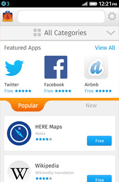
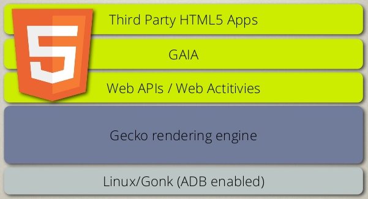

Inhalt
Firefox OS: Das Web als Betriebssystem
Folgende Folien sind in dieser Präsentation enthalten:
Firefox OS: Das Web als Betriebssystem
Robert Kaiser,
"KaiRo" <kairo@kairo.at>
Qualitätsprojektmanager, Mozilla
Qualitätsprojektmanager, Mozilla
Folien: http://slides.kairo.at/linuxwochen2014-fxos/
- Erstellt für einen Vortrag auf den Linuxwochen 2014 in Wien.
- Geschrieben in HTML 5 mit CSS 3 und JavaScript.
- Navigation mit Links auf allen Folien, mit Accesskeys (z.B. "n"/Alt+Umschalt+N für "next"/weiter) oder vor/zurück-Pfeilasten
- Inhalt
 05/2014 Robert Kaiser -
"Mozilla", "Firefox" und deren Logos sind
Handelsmarken
der Mozilla Foundation.
05/2014 Robert Kaiser -
"Mozilla", "Firefox" und deren Logos sind
Handelsmarken
der Mozilla Foundation.
Ein besseres Internet bauen

Die Mission von Mozilla ist es, Offenheit, Innovation & Möglichkeiten am Web zu fördern.
Anderes als aktuelle Mobilsysteme
- Das Web ist eine öffentliche Ressource, keine kommerzielle Handelsware
- Offene Standards, dezentralisierte Networke
- Weltweite Gemeinschaft, Kontrolle an die Benutzer
Mozilla & Mobile
- Frühe Versuche mit Minimo, dann Maemo
- Jetzt: Firefox für Android
- Das Web sollte nicht in einer Browser-App "gefangen" sein
Firefox OS

Das Web als vollwertiger Bestandteil:
Alle Bedienoberflächen und Apps sind HTML+CSS+JS!
Ziel ist es, alle benötigten neuen APIs zu standardisieren (oder durch Standards zu ersetzen).
Jetzt verfügbar

- Hauptsächlich Schwellenländer als Zielmäkte
- Ausgelifert in 14 Ländern (ES, PL, DE, IT, HU, SR, Teile von Lateinamerika)
- 3 Telefone (ZTE, ALcatel, LG) am Markt, 5-6 starten demnächst, inkl. $25-Smartphone
- Tausende von Apps im Firefox Marketplace
Architektur

Alles ist Web!
- Haupt- und Sperrbildschirme, Bedienelemente
- System-Apps - Telefonie, SMS, Kontakte, Kamera, usw.
- Zusätzlich installierte Apps, inkl. Offline-Fähigkeiten
WebAPIs
Neue Schnittstellen für Zugriff auf Gerätefunktionen und Standarddienste
Telefonie, SMS, Vibration, Batterie, Bluetooth, Kontakte, Datenspeicher, ...
Sicherheit
- Isolation aller Apps in separate Prozesse
- Systemzugriff und Kommunikation nur über definierte Schnittstellen
- Berechtigungsmodell, priviligierte und zertifizierte APIs
Pläne für Firefox OS

- Weitere Länder, zusätzliche Geräte, $25-Smartphone
- Überarbeitete Systemoberfläche ("Flow")
- "Fehlende" Funktionen (C&P, NFC, usw.)
- Längerfristig: Unterstützung besserer Geräte und Tablets
- Marketplace und APIs auf Android & Desktop verfügbar machen
Ressourcen
- Dokumentation: developer.mozilla.org/Firefox_OS
- Artikel über Funktionen: hacks.mozilla.org
- WebAPIs: wiki.mozilla.org/WebAPI
- ZTE Open C: http://item.ebay.co.uk/171301269724
- Flame Referenz-Device: https://developer.mozilla.org/en-US/Firefox_OS/Developer_phone_guide/Flame